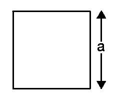

SQUARE FORMULA:
A four-sided polygon is a square. The length of all the four sides of a square
are equal and all the angles of a square are right angles. A square is a regular
quadrilateral, which means that it has four equal sides and four equal angles
90-degree angles, or right angles.
The Square Formula is used to find the perimeter, area and diagonal of a square.
SQUARE formula:
The Square Formula are given below as,

Perimeter of a square=4a
Area of a square=a2
Where,
a is the side of the square
The formula used to calculate the sum of two or more squares is the Sum of
squares formula. To describe how well a model represents the data being
modelled, the sum of squares formula is used. The sum of square is the measure
of deviation from the data’s mean value. Hence, it is calculated as the total
summation of the squares minus from the mean.
The formula to calculate the sum of the squares of two values is given as,
a2+b2=(a+b)2−2ab
a2+b2=(a+b)2−2ab
The Sum of Squares Formula for N values is given as,
12+22+32…….n2=n(n−1)(2n−1)/6
To know the measurement of a building for a construction project, for a room, or
tiles, or a carpet; basically anything that is square, we measure them in the
unit: Square footage. Commonly, the area specifically for a room and building is
square footage.
The formula is given as:
SquareFootage = Length×Breadth
To find out the Square Footage Formula for a triangular area,
SquareFootage=(Breadth×Length)/2